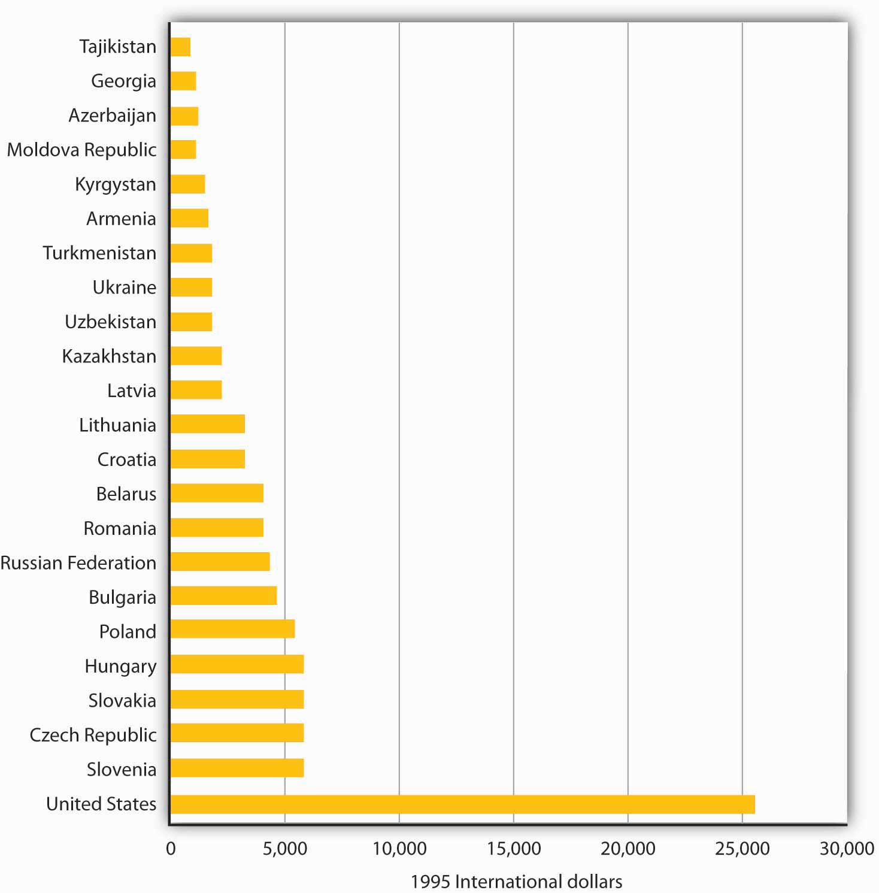
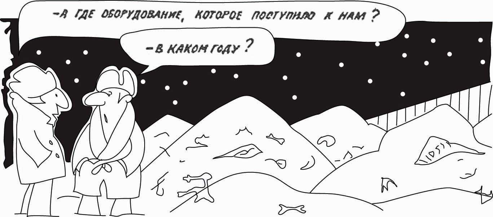
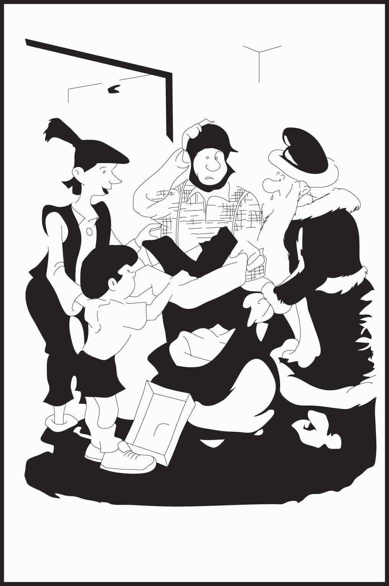
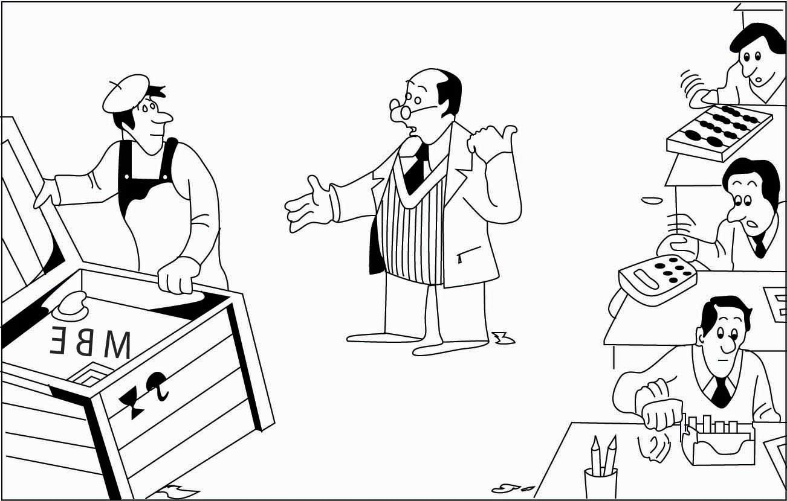

It is hard, even in retrospect, to appreciate how swiftly the collapse came. Command socialism, which had reigned supreme in Russia for more than 70 years and in much of the rest of the world for more than 40 years, appeared to be a permanent institution. Indeed, many observers had expected its influence to increase by the end of the twentieth century. But in the span of five months in 1989, command socialist systems fell in six Eastern European nations. The Soviet Union, which had been the main enemy of the United States in the post-World War II period, and which possesses enough nuclear arms to destroy the world (as does the United States), broke up in 1991.
The start of the collapse can be dated to 1980. The government of Poland, a command socialist state that was part of the Soviet bloc, raised meat prices. The price boosts led to widespread protests and to the organization of Solidarity, the first independent labor union permitted in a Soviet bloc state. After nine years of political clashes, Solidarity won an agreement from the Polish government for wide-ranging economic reforms and for free elections. Solidarity-backed candidates swept the elections in June 1989, and a new government, pledged to democracy and to market capitalism, came to power in August.
Command socialist governments in the rest of the Soviet bloc disappeared quickly in the wake of Poland’s transformation. Hungary’s government fell in October. East Germany opened the Berlin Wall in November, and the old regime, for which that wall had been a symbol, collapsed. Bulgaria and Czechoslovakia kicked out their command socialist leaders the same month. Romania’s dictator, Nicolae Ceausescu, was executed after a bloody uprising in December. Ultimately, every nation in the Warsaw Pact, the bloc making up the Soviet Union and its Eastern European satellite nations, announced its intention to discard the old system of command socialism. The collapse of the command socialist regimes of the former Soviet bloc precipitated an often painful process of transition as countries tried to put in place the institutions of a market capitalist economy. But, by the beginning of the 21st century, many of them were already admitted as members of the European Union.
Meanwhile, a very different process of transition has been under way in China. The Chinese began a gradual process of transition toward a market economy in 1979. It has been a process marked by spectacular economic gain ever since.
In this chapter we will examine the rise of command socialist systems and explore their ideological roots. Then we will see how these economic systems operated and trace the sources of their collapse. Finally, we will investigate the problems and prospects for the transition from command socialism to market capitalism.
Socialism has a very long history. The earliest recorded socialist society is described in the Book of Acts in the Bible. Following the crucifixion of Jesus, Christians in Jerusalem established a system in which all property was owned in common.
There have been other socialist experiments in which all property was held in common, effectively creating socialist societies. Early in the nineteenth century, such reformers as Robert Owen, Count Claude-Henri de Rouvroy de Saint-Simon, and Charles Fourier established almost 200 communities in which workers shared in the proceeds of their labor. These men, while operating independently, shared a common ideal—that in the appropriate economic environment, people will strive for the good of the community rather than for their own self-interest. Although some of these communities enjoyed a degree of early success, none survived.
Socialism as the organizing principle for a national economy is in large part the product of the revolutionary ideas of one man, Karl Marx. His analysis of what he saw as the inevitable collapse of market capitalist economies provided a rallying spark for the national socialist movements of the twentieth century. Another important contributor to socialist thought was Vladimir Ilyich Lenin, who modified many of Marx’s theories for application to the Soviet Union. Lenin put his ideas into practice as dictator of that country from 1917 until his death in 1924. It fell to Joseph Stalin to actually implement the Soviet system. We shall examine the ideas of Marx, Lenin, and Stalin and investigate the operation of the economic systems based upon them.
Marx is perhaps best known for the revolutionary ideas expressed in the ringing phrases of the Communist Manifesto, such as those shown in the Case in Point. Written with Friedrich Engels in 1848, the Manifesto was a call to arms. But it was Marx’s exhaustive, detailed theoretical analysis of market capitalism, Das Kapital (Capital), that was his most important effort. This four-volume work, most of which was published after Marx’s death, examines a theoretical economy that we would now describe as perfect competition. In this context, Marx outlined a dynamic process that would, he argued, inevitably result in the collapse of capitalism.
Marx stressed a historical approach to the analysis of economics. Indeed, he was sharply critical of his contemporaries, complaining that their work was wholly lacking in historical perspective. To Marx, capitalism was merely a stage in the development of economic systems. He explained how feudalism would tend to give way to capitalism and how capitalism would give way to socialism. Marx’s conclusions stemmed from his labor theory of value and from his perception of the role of profit in a capitalist economy.
In The Wealth of Nations, Adam Smith proposed the idea of the labor theory of valueTheory that states that the relative values of different goods are ultimately determined by the relative amounts of labor used in their production., which states that the relative values of different goods are ultimately determined by the relative amounts of labor used in their production. This idea was widely accepted at the time Marx was writing. Economists recognized the roles of demand and supply but argued that these would affect prices only in the short run. In the long run, it was labor that determined value.
Marx attached normative implications to the ideas of the labor theory of value. Not only was labor the ultimate determinant of value, it was the only legitimate determinant of value. The price of a good in Marx’s system equaled the sum of the labor and capital costs of its production, plus profit to the capitalist. Marx argued that capital costs were determined by the amount of labor used to produce the capital, so the price of a good equaled a return to labor plus profit. Marx defined profit as surplus valueThe difference between the price of a good or service and the labor cost of producing it., the difference between the price of a good or service and the labor cost of producing it. Marx insisted that surplus value was unjustified and represented exploitation of workers.
Marx accepted another piece of conventional economic wisdom of the nineteenth century, the concept of subsistence wages. This idea held that wages would, in the long run, tend toward their subsistence level, a level just sufficient to keep workers alive. Any increase in wages above their subsistence level would simply attract more workers—or induce an increase in population, forcing wages back down. Marx suggested that unemployed workers were important in this process; they represented a surplus of labor that acted to push wages down.
The concepts of surplus value and subsistence wages provide the essential dynamics of Marx’s system. He said that capitalists, in an effort to increase surplus value, would seek to acquire more capital. But as they expanded capital, their profit rates, expressed as a percentage of the capital they held, would fall. In a desperate effort to push profit rates up, capitalists would acquire still more capital, which would only push their rate of return down further.
A further implication of Marx’s scheme was that as capitalists increased their use of capital, the wages received by workers would become a smaller share of the total value of goods. Marx assumed that capitalists used all their funds to acquire more capital. Only workers, then, could be counted on for consumption. But their wages equaled only a fraction of the value of the output they produced—they could not possibly buy all of it. The result, Marx said, would be a series of crises in which capitalists throughout the economy, unable to sell their output, would cut back production. This would cause still more reductions in demand, exacerbating the downturn in economic activity. Crises would drive the weakest capitalists out of business; they would become unemployed and thus push wages down further. The economy could recover from such crises, but each one would weaken the capitalist system.
Faced with declining surplus values and reeling from occasional crises, capitalists would seek out markets in other countries. As they extended their reach throughout the world, Marx said, the scope of their exploitation of workers would expand. Although capitalists could make temporary gains by opening up international markets, their continuing acquisition of capital meant that profit rates would resume their downward trend. Capitalist crises would now become global affairs.
According to Marx, another result of capitalists’ doomed efforts to boost surplus value would be increased solidarity among the working class. At home, capitalist acquisition of capital meant workers would be crowded into factories, building their sense of class identity. As capitalists extended their exploitation worldwide, workers would gain a sense of solidarity with fellow workers all over the planet. Marx argued that workers would recognize that they were the victims of exploitation by capitalists.
Marx was not clear about precisely what forces would combine to bring about the downfall of capitalism. He suggested other theories of crisis in addition to the one based on insufficient demand for the goods and services produced by capitalists. Indeed, modern theories of the business cycle owe much to Marx’s discussion of the possible sources of economic downturns. Although Marx spoke sometimes of bloody revolution, it is not clear that this was the mechanism he thought would bring on the demise of capitalism. Whatever the precise mechanism, Marx was confident that capitalism would fall, that its collapse would be worldwide, and that socialism would replace it.
To a large degree, Marx’s analysis of a capitalist economy was a logical outgrowth of widely accepted economic doctrines of his time. As we have seen, the labor theory of value was conventional wisdom, as was the notion that workers would receive only a subsistence wage. The notion that profit rates would fall over time was widely accepted. Doctrines similar to Marx’s notion of recurring crises had been developed by several economists of the period.
What was different about Marx was his tracing of the dynamics of a system in which values would be determined by the quantity of labor, wages would tend toward the subsistence level, profit rates would fall, and crises would occur from time to time. Marx saw these forces as leading inevitably to the fall of capitalism and its replacement with a socialist economic system. Other economists of the period generally argued that economies would stagnate; they did not anticipate the collapse predicted by Marx.
Marx’s predictions have turned out to be wildly off the mark. Profit rates have not declined; they have remained relatively stable over the long run. Wages have not tended downward toward their subsistence level; they have risen. Labor’s share of total income in market economies has not fallen; it has increased. Most important, the predicted collapse of capitalist economies has not occurred.
Revolutions aimed at establishing socialism have been rare. Perhaps most important, none has occurred in a market capitalist economy. The Cuban economy, for example, had some elements of market capitalism before Castro but also had features of command systems as well.While resources in Cuba were generally privately owned, the government had broad powers to dictate their use. In other cases where socialism has been established through revolution it has replaced systems that could best be described as feudal. The Russian Revolution of 1917 that established the Soviet Union and the revolution that established the People’s Republic of China in 1949 are the most important examples of this form of revolution. In the countries of Eastern Europe, socialism was imposed by the former Soviet Union in the wake of World War II. In the early 2000s, a number of Latin American countries, such as Venezuela and Bolivia, seemed to be moving towards nationalizing, rather than privatizing assets, but it is too early to know the long-term direction of these economies.
Whatever the shortcomings of Marx’s economic prognostications, his ideas have had enormous influence. Politically, his concept of the inevitable emergence of socialism promoted the proliferation of socialist-leaning governments during the middle third of the twentieth century. Before socialist systems began collapsing in 1989, fully one-third of the earth’s population lived in countries that had adopted Marx’s ideas. Ideologically, his vision of a market capitalist system in which one class exploits another has had enormous influence.
Briefly explain how each of the following would contribute to the downfall of capitalism: 1) capital accumulation, 2) subsistence wages, and 3) the factory system.
The Communist Manifesto by Karl Marx and Friedrich Engels was originally published in London in 1848, a year in which there were a number of uprisings across Europe that at the time could have been interpreted as the beginning of the end of capitalism. This relatively short (12,000 words) document was thus more than an analysis of the process of historical change, in which class struggles propel societies from one type of economic system to the next, and a prediction about how capitalism would evolve and why it would end. It was also a call to action. It contains powerful images that cannot be easily forgotten. It begins,
“A specter is haunting Europe—the specter of communism. All the Powers of old Europe have entered into a holy alliance to exorcise this specter: Pope and Czar, Metternich and Guizot, French Radicals and German police-spies.”
Its description of history begins,
“The history of all hitherto existing society is the history of class struggles. Freeman and slave, patrician and plebeian, lord and serf, guild-master and journeyman, in a word, oppressor and oppressed, stood in constant opposition to one another …”
In capitalism, the divisions are yet more stark:
“Society as a whole is more and more splitting up into two great hostile camps, into two great classes directly facing each other: Bourgeoisie and Proletariat.”
Foreshadowing the globalization of capitalism, Marx and Engels wrote,
“The bourgeoisie, by the rapid improvement of all instruments of production, by the immensely facilitated means of communication, draws all, even the most barbarian, nations into civilization. The cheap prices of its commodities are the heavy artillery with which it batters down all Chinese walls, with which it forces the barbarians’ intensely obstinate hatred of foreigners to capitulate. It compels all nations, on pain of extinction, to adopt the bourgeois mode of production: it compels them to introduce what it calls civilization into their midst. … In one word, it creates a world after its own image.”
But the system, like all other class-based systems before it, brings about its own demise:
“The weapons with which the bourgeoisie felled feudalism to the ground are now turned against the bourgeoisie itself. … Masses of laborers, crowded into the factory, are organized like soldiers. … It was just this contact that was needed to centralize the numerous local struggles, all of the same character, into one national struggle between classes.”
The national struggles eventually become an international struggle in which:
“What the bourgeoisie, therefore, produces, above all, is its own gravediggers.”
The Manifesto ends,
“Let the ruling classes tremble at a Communistic revolution. The proletarians have nothing to lose but their chains. They have a world to win. WORKING MEN OF ALL COUNTRIES, UNITE!”
Marx predicted that capital accumulation would lead to falling profit rates over the long term. Subsistence wages meant that workers would not be able to consume enough of what was produced and this would lead to ever larger economic downturns. Because of the factory system, worker solidarity would grow and workers would come to understand that they were being exploited by capitalists.
The most important example of socialism was the economy of the Union of Soviet Socialist Republics, the Soviet Union. The Russian Revolution succeeded in 1917 in overthrowing the czarist regime that had ruled the Russian Empire for centuries. Leaders of the revolution created the Soviet Union in its place and sought to establish a socialist state based on the ideas of Karl Marx.
The leaders of the Soviet Union faced a difficulty in using Marx’s writings as a foundation for a socialist system. He had sought to explain why capitalism would collapse; he had little to say about how the socialist system that would replace it would function. He did suggest the utopian notion that, over time, there would be less and less need for a government and the state would wither away. But his writings did not provide much of a blueprint for running a socialist economic system.
Lacking a guide for establishing a socialist economy, the leaders of the new regime in Russia struggled to invent one. In 1917, Lenin attempted to establish what he called “war communism.” The national government declared its ownership of most firms and forced peasants to turn over a share of their output to the government. The program sought to eliminate the market as an allocative mechanism; government would control production and distribution. The program of war communism devastated the economy. In 1921, Lenin declared a New Economic Policy. It returned private ownership to some sectors of the economy and reinstituted the market as an allocative mechanism.
Lenin’s death in 1924 precipitated a power struggle from which Joseph Stalin emerged victorious. It was under Stalin that the Soviet economic system was created. Because that system served as a model for most of the other command socialist systems that emerged, we shall examine it in some detail. We shall also examine an intriguing alternative version of socialism that was created in Yugoslavia after World War II.
Stalin began by seizing virtually all remaining privately-owned capital and natural resources in the country. The seizure was a brutal affair; he eliminated opposition to his measures through mass executions, forced starvation of whole regions, and deportation of political opponents to prison camps. Estimates of the number of people killed during Stalin’s centralization of power range in the tens of millions. With the state in control of the means of production, Stalin established a rigid system in which a central administration in Moscow determined what would be produced.
The justification for the brutality of Soviet rule lay in the quest to develop “socialist man.” Leaders of the Soviet Union argued that the tendency of people to behave in their own self-interest was a by-product of capitalism, not an inherent characteristic of human beings. A successful socialist state required that the preferences of people be transformed so that they would be motivated by the collective interests of society, not their own self-interest. Propaganda was widely used to reinforce a collective identity. Those individuals who were deemed beyond reform were likely to be locked up or executed.
The political arm of command socialism was the Communist party. Party officials participated in every aspect of Soviet life in an effort to promote the concept of socialist man and to control individual behavior. Party leaders were represented in every firm and in every government agency. Party officials charted the general course for the economy as well.
A planning agency, Gosplan, determined the quantities of output that key firms would produce each year and the prices that would be charged. Other government agencies set output levels for smaller firms. These determinations were made in a series of plans. A 1-year plan specified production targets for that year. Soviet planners also developed 5-year and 20-year plans.
Managers of state-owned firms were rewarded on the basis of their ability to meet the annual quotas set by the Gosplan. The system of quotas and rewards created inefficiency in several ways. First, no central planning agency could incorporate preferences of consumers and costs of factors of production in its decisions concerning the quantity of each good to produce. Decisions about what to produce were made by political leaders; they were not a response to market forces. Further, planners could not select prices at which quantities produced would clear their respective markets. In a market economy, prices adjust to changes in demand and supply. Given that demand and supply are always changing, it is inconceivable that central planners could ever select market-clearing prices. Soviet central planners typically selected prices for consumer goods that were below market-clearing levels, causing shortages throughout the economy. Changes in prices were rare.
Plant managers had a powerful incentive for meeting their quotas; they could expect bonuses equal to about 35% of their base salary for producing the quantities required of their firms. Those who exceeded their quotas could boost this to 50%. In addition, successful managers were given vacations, better apartments, better medical care, and a host of other perquisites. Managers thus had a direct interest in meeting their quotas; they had no incentive to select efficient production techniques or to reduce costs.
Perhaps most important, there was no incentive for plant managers to adopt new technologies. A plant implementing a new technology risked start-up delays that could cause it to fall short of its quota. If a plant did succeed in boosting output, it was likely to be forced to accept even larger quotas in the future. A plant manager who introduced a successful technology would only be slapped with tougher quotas; if the technology failed, he or she would lose a bonus. With little to gain and a great deal to lose, Soviet plant managers were extremely reluctant to adopt new technologies. Soviet production was, as a result, characterized by outdated technologies. When the system fell in 1991, Soviet manufacturers were using production methods that had been obsolete for decades in other countries.
Centrally controlled systems often generated impressive numbers for total output but failed in satisfying consumer demands. Gosplan officials, recognizing that Soviet capital was not very productive, ordered up a lot of it. The result was a heavy emphasis on unproductive capital goods and relatively little production of consumer goods. On the eve of the collapse of the Soviet Union, Soviet economists estimated that per capita consumption was less than one-sixth of the U.S. level.
The Soviet system also generated severe environmental problems. In principle, a socialist system should have an advantage over a capitalist system in allocating environmental resources for which private property rights are difficult to define. Because a socialist government owns all capital and natural resources, the ownership problem is solved. The problem in the Soviet system, however, came from the labor theory of value. Since natural resources are not produced by labor, the value assigned to them was zero. Soviet plant managers thus had no incentive to limit their exploitation of environmental resources, and terrible environmental tragedies were common.
Systems similar to that created in the Soviet Union were established in other Soviet bloc countries as well. The most important exceptions were Yugoslavia, which is discussed in the next section, and China, which started with a Soviet-style system and then moved away from it. The Chinese case is examined later in this chapter.
Although the Soviet Union was able to impose a system of command socialism on nearly all the Eastern European countries it controlled after World War II, Yugoslavia managed to forge its own path. Yugoslavia’s communist leader, Marshal Tito, charted an independent course, accepting aid from Western nations such as the United States and establishing a unique form of socialism that made greater use of markets than the Soviet-style systems did. Most important, however, Tito quickly moved away from the centralized management style of the Soviet Union to a decentralized system in which workers exercised considerable autonomy.
In the Yugoslav system, firms with five or more employees were owned by the state but made their own decisions concerning what to produce and what prices to charge. Workers in these firms elected their managers and established their own systems for sharing revenues. Each firm paid a fee for the use of its state-owned capital. In effect, firms operated as labor cooperatives. Firms with fewer than five employees could be privately owned and operated.
Economic performance in Yugoslavia was impressive. Living standards there were generally higher than those in other Soviet bloc countries. The distribution of income was similar to that of command socialist economies; it was generally more equal than distributions achieved in market capitalist economies. The Yugoslav economy was plagued, however, by persistent unemployment, high inflation, and increasing disparities in regional income levels.
Yugoslavia began breaking up shortly after command socialist systems began falling in Eastern Europe. It had been a country of republics and provinces with uneasy relationships among them. Tito had been the glue that held them together. After his death, the groups began to move apart and a number of countries have formed out of what was once Yugoslavia, in several cases accompanied by war. They all seem to be moving in the market capitalist direction, with Slovenia and Macedonia leading the way. Over time, the others—Croatia, Bosnia, and Herzegovina, and even Serbia and Montenegra–have been following suit.
Soviet leaders placed great emphasis on Marx’s concept of the inevitable collapse of capitalism. While they downplayed the likelihood of a global revolution, they argued that the inherent superiority of socialism would gradually become apparent. Countries would adopt the socialist model in order to improve their living standards, and socialism would gradually assert itself as the dominant world system.
One key to achieving the goal of a socialist world was to outperform the United States economically. Stalin promised in the 1930s that the Soviet economy would surpass that of the United States within a few decades. The goal was clearly not achieved. Indeed, it was the gradual realization that the command socialist system could not deliver high living standards that led to the collapse of the old system.
Figure 34.1 "Per Capita Output in Former Soviet Bloc States and in the United States, 1995" shows the World Bank’s estimates of per capita output, measured in dollars of 1995 purchasing power, for the republics that made up the Soviet Union, for the Warsaw Pact nations of Eastern Europe for which data are available, and for the United States in 1995. Nations that had operated within the old Soviet system had quite low levels of per capita output. Living standards were lower still, given that these nations devoted much higher shares of total output to investment and to defense than did the United States.
Figure 34.1 Per Capita Output in Former Soviet Bloc States and in the United States, 1995
Per capita output was far lower in the former republics of the Soviet Union and in Warsaw Pact countries in 1995 than in the United States. All values are measured in units of equivalent purchasing power.
Source: United Nations, Human Development Report, 1998.
Ultimately, it was the failure of the Soviet system to deliver living standards on a par with those achieved by market capitalist economies that brought the system down. Market capitalist economic systems create incentives to allocate resources efficiently; socialist systems do not. Of course, a society may decide that other attributes of a socialist system make it worth retaining. But the lesson of the 1980s was that few that had lived under command socialist systems wanted to continue to do so.
What specific problem of a command socialist system does each of the cartoons in the Case in Point parodying that system highlight?
These cartoons came from the Soviet press. Soviet citizens were clearly aware of many of the problems of their planned system.
|

“But where is the equipment that was sent to us?” “Which year are you talking about?” |

“But Santa, it’s winter, so we asked for boots for our son!” “I know, but the only thing available in the state store was a pair of sandals.” |
|

“Why are they sending us new technology when the old still works?” |
The first cartoon shows the inefficiency that resulted because of the failure to take into account the costs of factors of production. The second cartoon shows the difficulty involved in getting business to incorporate new technologies. The third shows the system’s failure to respond to consumers’ demands.
Just as leaders of the Soviet Union had to create their own command socialist systems, leaders of the economies making the transition to market capitalist economies must find their own paths to new economic systems. It is a task without historical precedent.
In this section we will examine two countries and the strategies they have chosen for the transition. China was the first socialist nation to begin the process, and in many ways it has been the most successful. Russia was the dominant republic in the old Soviet Union; whether its transition is successful will be crucially important. Before turning to the transition process in these two countries, we will consider some general problems common to all countries seeking to establish market capitalism in the wake of command socialism.
Establishing a system of market capitalism in a command socialist economy is a daunting task. The nations making the attempt must invent the process as they go along. Each of them, though, faces similar problems. Former command socialist economies must establish systems of property rights, establish banking systems, deal with the problem of inflation, and work through a long tradition of ideological antipathy toward the basic nature of a capitalist system.
A market system requires property rights before it can function. A property right details what one can and cannot do with a particular asset. A market system requires laws that specify the actions that are permitted and those that are proscribed, and it also requires institutions for the enforcement of agreements dealing with property rights. These include a court system and lawyers trained in property law and contract law. For the system to work effectively, there must be widespread understanding of the basic nature of private property and of the transactions through which it is allocated.
Command socialist economies possess virtually none of these prerequisites for market capitalism. When the state owned virtually all capital and natural resources, there was little need to develop a legal system that would spell out individual property rights. Governments were largely free to do as they wished.
Countries seeking a transition from command socialism to market capitalism must develop a legal system comparable to those that have evolved in market capitalist countries over centuries. The problem of creating a system of property rights and the institutions necessary to support it is a large hurdle for economies making the transition to a market economy.
One manifestation of the difficulties inherent in establishing clear and widely recognized property rights in formerly socialist countries is widespread criminal activity. Newly established private firms must contend with racketeers who offer protection at a price. Firms that refuse to pay the price may find their property destroyed or some of their managers killed. Criminal activity has been rampant in economies struggling toward a market capitalist system.
Banks in command socialist countries were operated by the state. There was no tradition of banking practices as they are understood in market capitalist countries.
In a market capitalist economy, a privately owned bank accepts deposits from customers and lends these deposits to borrowers. These borrowers are typically firms or consumers. Banks in command socialist economies generally accepted saving deposits, but checking accounts for private individuals were virtually unknown. Decisions to advance money to firms were made through the economic planning process, not by individual banks. Banks did not have an opportunity to assess the profitability of individual enterprises; such considerations were irrelevant in the old command socialist systems. Bankers in these economies were thus unaccustomed to the roles that would be required of them in a market capitalist system.
One particularly vexing problem facing transitional economies is inflation. Under command socialist systems, the government set prices; it could abolish inflation by decree. But such systems were characterized by chronic shortages of consumer goods. Consumers, unable to find the goods they wanted to buy, simply accumulated money. As command socialist economies began their transitions, there was typically a very large quantity of money available for consumers to spend. A first step in transitions was the freeing of prices. Because the old state-determined prices were generally below equilibrium levels, prices typically surged in the early stages of transition. Prices in Poland, for example, shot up 400% within a few months of price decontrol. Prices in Russia went up tenfold within six months.
One dilemma facing transitional economies has been the plight of bankrupt state enterprises. In a market capitalist economy, firms unable to generate revenues that exceed their costs go out of business. In command socialist economies, the central bank simply wrote checks to cover their deficits. As these economies have begun the transition toward market capitalism, they have generally declared their intention to end these bailouts and to let failing firms fail. But the phenomenon of state firms earning negative profits is so pervasive that allowing all of them to fail at once could cause massive disruption.
The practical alternative to allowing firms to fail has been continued bailouts. But in transitional economies, that has meant issuing money to failed firms. This practice increases the money supply and contributes to continuing inflation. Most transition economies experienced high inflation in the initial transition years, but were subsequently able to reduce it.
Soviet citizens, and their counterparts in other command socialist economies, were told for decades that market capitalism is an evil institution, that it fosters greed and human misery. They were told that some people become rich in the system, but that they do so only at the expense of others who become poorer.
In the context of a competitive market, this view of market processes as a zero-sum game—one in which the gains for one person come only as a result of losses for another—is wrong. In market transactions, one person gains only by making others better off. But the zero-sum view runs deep, and it is a source of lingering hostility toward market forces.
Countries seeking to transform their economies from command socialist to more market-oriented systems face daunting challenges. Given these challenges, it is remarkable that they have persisted in the effort. There are a thousand reasons for economic reform to fail, but the reform effort has, in general, continued to move forward.
China is a giant by virtually any standard. Larger than the continental United States, it is home to more than 1.3 billion people—more than one-fifth of the earth’s population. Although China is poor, its economy has been among the fastest growing in the world since 1980. That rapid growth is the result of a gradual shift toward a market capitalist economy. The Chinese have pursued their transition in a manner quite different from the paths taken by former Soviet bloc nations.
China was invaded by Japan during World War II. After Japan’s defeat, civil war broke out between Chinese communists, led by Mao Zedong, and nationalists. The communists prevailed, and the People’s Republic of China was proclaimed in 1949.
Mao set about immediately to create a socialist state in China. He nationalized many firms and redistributed land to peasants. Many of those who had owned land under the old regime were executed. China’s entry into the Korean War in 1950 led to much closer ties to the Soviet Union, which helped China to establish a command socialist economy.
China’s first five-year plan, launched in 1953, followed the tradition of Soviet economic development. It stressed capital-intensive production and the development of heavy industry. But China had far less capital and a great many more people than did the Soviet Union. Capital-intensive development made little sense. In 1958, Mao declared a uniquely Chinese approach to development, which he dubbed the Great Leap Forward. It focused on labor-intensive development and the organization of small productive units to quickly turn China into an industrialized country. Indeed, households were encouraged to form their own productive units under the slogan “An iron and steel foundry in every backyard.” The Great Leap repudiated the bonuses and other material incentives stressed by the Soviets; motivation was to come from revolutionary zeal, not self-interest.
In agriculture, the new plan placed greater emphasis on collectivization. Farmers were organized into communes containing several thousand households each. Small private plots of land, which had been permitted earlier, were abolished. China’s adoption of the plan was a victory for radical leaders in the government.
The Great Leap was an economic disaster. Output plunged and a large-scale famine ensued. Moderate leaders then took over, and the economy got back to its 1957 level of output by the mid-1960s.
Then, again in the mid-1960s, power shifted back towards the radicals with the launching of the Great Proletarian Cultural Revolution. During that time, students formed groups called “red guards” and were encouraged to expose “capitalist roaders.” A group dubbed the “Gang of Four,” led by Mao’s wife Jiang Qing, tried to steer Chinese society towards an ever more revolutionary course until Mao’s death in 1976.
Following Mao’s death, pragmatists within the Communist Party, led by Deng Xiaoping, embarked on a course of reform that promoted a more market-oriented economy coupled with retention of political power by the Communists. This policy combination was challenged in 1989 by a large demonstration in Beijing’s Tiananmen Square. The authorities ordered the military to remove the demonstrators, resulting in the deaths of several hundred civilians. A period of retrenchment in the reform process followed and lasted for several years. Then, in 1992, Deng ushered in a period of reinvigorated economic reform in a highly publicized trip to southern China, where reforms had progressed farther. Through several leadership changes since then, the path of economic reform, managed by the Communist Party, has continued. The result has been a decades-long period of phenomenal economic growth.
What were some of the major elements of the economic reform? Beginning in 1979, many Chinese provincial leaders instituted a system called bao gan dao hu—“contracting all decisions to the household.” Under the system, provincial officials contracted the responsibility for operating collectively owned farmland to individual households. Government officials gave households production quotas they were required to meet and purchased that output at prices set by central planners. But farmers were free to sell any additional output they could produce at whatever prices they could get in the marketplace and to keep the profits for themselves.
By 1984, 93% of China’s agricultural land had been contracted to individual households and the rate of growth in agricultural output had soared.
At the industrial level, state-owned enterprises (SOEs) were told to meet their quotas and then were free to engage in additional production for sale in free markets. Over time, even those production directives were discontinued. More importantly, manufacturing boomed with the development of township and village enterprises, as well as various types of private endeavors, with much participation from foreign firms. Most price controls were abolished. The entry of China into the World Trade Organization in 2001 symbolized a commitment towards moving even further down the road of economic reform.
In effect, China’s economy is increasingly directed by market forces. Even though five-year plans are still announced, they are largely advisory rather than commanding in nature. Recognizing the incomplete nature of the reforms, Chinese authorities continue to work on making the SOEs more competitive, as well as privatizing them, creating a social security system in which social benefits are not tied to a worker’s place of employment, and reforming the banking sector.
How well has the gradual approach to transition worked? Between 1980 and 2011, China had one of the fastest-growing economies in the world. Its per capita output, measured in dollars of constant purchasing power, more than quadrupled. The country, which as late as 1997 was one of the poorest of the 59 low-income-countries in the world, is now situated comfortably among the more prosperous lower-middle-income countries, according to the World Bank. Figure 34.2 "Soaring Output in China" compares growth rates in China to those achieved by Japan and the United States and to the average annual growth rate of all world economies between 1985 and 2009.
Figure 34.2 Soaring Output in China

China’s growth in per capita output from 1985 to 2009 greatly exceeded rates recorded for Japan, the United States, or the average of all nations.
Source: World Bank, World Development Reports, 1997, 1998, 2008, 2009, 2010, 2011 Table 1.
Where will China’s reforms lead? While the Chinese leadership has continued to be repressive politically, it has generally supported the reform process. The result has been continued expansion of the free economy and a relative shrinking of the state-run sector. Given the rapid progress China has achieved with its gradual approach to reform, it is hard to imagine that the country would reverse course. Given the course it is on, China seems likely to become a market capitalist economy—and a prosperous one—within a few decades.
Russia dominated the former Soviet Union. It contained more than half the Soviet people and more than three-fourths of the nation’s land area. Russia’s capital, Moscow, was the capital and center of power for the entire country.
Today, Russia retains control over the bulk of the military power that had been accumulated by the former Soviet Union. While it is now an ally of the United States, Russia still possesses the nuclear capability to destroy life on earth. Its success in making the transition to market capitalism and joining as a full partner in the world community thus has special significance for peace.
Russia’s shift toward market capitalism has its roots in a reform process initiated during the final years of the existence of the Soviet Union. That effort presaged many of the difficulties that have continued to plague Russia.
The Soviet Union, as we have already seen, had a well-established system of command socialism. Leading Soviet economists, however, began arguing as early as the 1970s that the old system could never deliver living standards comparable to those achieved in market capitalist economies. The first political leader to embrace the idea of radical reform was Mikhail Gorbachev, who became General Secretary of the Communist party—the highest leadership post in the Soviet Union—in 1985.
Mr. Gorbachev instituted political reforms that allowed Soviet citizens to speak out, and even to demonstrate, against their government. This policy was dubbed glasnost, or “openness.” Economically, he called for much greater autonomy for state enterprises and a system in which workers’ wages would be tied to productivity. The new policy, dubbed perestroika, or “restructuring,” appeared to be an effort to move the system toward a mixed economy.
But Mr. Gorbachev’s economic advisers wanted to go much further. A small group of economists, which included his top economic adviser, met in August 1990 to draft a radical plan to transform the economy to a market capitalist system—and to do it in 500 days. Stanislav Shatalin, a Soviet economist, led the group. Mr. Gorbachev endorsed the Shatalin plan the following month, and it appeared that the Soviet Union was on its way to a new system. The new plan, however, threatened the Soviet power elite. It called for sharply reduced funding for the military and for the Soviet Union’s secret police force, the KGB. It would have stripped central planners, who were very powerful, of their authority. The new plan called for nothing less than the destruction of the old system—and the elimination of the power base of most government officials.
Top Soviet bureaucrats and military leaders reacted to the Shatalin plan with predictable rage. They delivered an ultimatum to Mr. Gorbachev: dump the Shatalin plan or be kicked out.
Caught between advisers who had persuaded him of the necessity for radical reform and Communist party leaders who would have none of it, Mr. Gorbachev chose to leave the command system in place and to seek modest reforms. He announced a new plan that retained control over most prices and he left in place the state’s ownership of enterprises. In an effort to deal with shortages of other goods, he ordered sharp price increases early in 1991.
These measures, however, accomplished little. Black market prices for basic consumer goods were typically 10 to 20 times the level of state prices. Those prices, which respond to demand and supply, may be taken as a rough gauge of equilibrium prices. People were willing to pay the higher black market prices because they simply could not find goods at the state-decreed prices. Mr. Gorbachev’s order to double and even triple some state prices narrowed the gap between official and equilibrium prices, but did not close it. Table 34.1 "Official Versus Black Market Prices in the Soviet Union, 1991" shows some of the price changes imposed and compares them to black market prices.
Table 34.1 Official Versus Black Market Prices in the Soviet Union, 1991
| Item | Old price | New price | Black market price |
|---|---|---|---|
| Children’s shoes | 2–10 rubles | 10–50 rubles | 50–300 rubles |
| Toilet paper | 32–40 kopeks | 60–75 kopeks | 2–3 rubles |
| Compact car | 7,000 rubles | 35,000 rubles | 70,000–100,000 rubles |
| Bottle of vodka | 10.5 rubles | 10.5 rubles | 30–35 rubles |
Mikhail Gorbachev ordered sharp increases in the prices of most consumer goods early in 1991 in an effort to eliminate shortages. As the table shows, however, a large gap remained between official and black market prices.
Source: Komsomolskaya pravda
Perhaps the most important problem for Mr. Gorbachev’s price hikes was that there was no reason for state-owned firms to respond to them by increasing their output. The managers and workers in these firms, after all, were government employees receiving government-determined salaries. There was no mechanism through which they would gain from higher prices. A private firm could be expected to increase its quantity supplied in response to a higher price. State-owned firms did not.
The Soviet people faced the worst of economic worlds in 1991. Soviet output plunged sharply, prices were up dramatically, and there was no relief from severe shortages. A small group of government officials opposed to economic reform staged a coup in the fall of 1991, putting Mr. Gorbachev under house arrest. The coup produced massive protests throughout the country and failed within a few days. Chaos within the central government created an opportunity for the republics of the Soviet Union to declare their independence, and they did. These defections resulted in the collapse of the Soviet Union late in 1991, with Russia as one of 15 countries that emerged.
Boris Yeltsin, the first elected president of Russia, had been a leading proponent of market capitalism even before the Soviet Union collapsed. He had supported the Shatalin plan and had been sharply critical of Mr. Gorbachev’s failure to implement it. Once Russia became an independent republic, Mr. Yeltsin sought a rapid transition to market capitalism.
Mr. Yeltsin’s reform efforts, however, were slowed by Russian legislators, most of them former Communist officials who were appointed to their posts under the old regime. They fought reform and repeatedly sought to impeach Mr. Yeltsin. Citing health reasons, he abruptly resigned from the presidency in 1999, and appointed Vladimir Putin, who had only recently been appointed as Yeltsin’s prime minister, as acting president. Mr. Putin has since been elected and re-elected, though many observers have questioned the fairness of those elections as well as Mr. Putin’s commitment to democracy. Barred constitutionally from re-election in 2008, Putin became prime minister. Dimitry Medvedev, Putin’s close ally, became president.
Despite the hurdles, Russian reformers have accomplished a great deal. Prices of most goods have been freed from state controls. Most state-owned firms have been privatized, and most of Russia’s output of goods and services is now produced by the private sector.
To privatize state firms, Russian citizens were issued vouchers that could be used to purchase state enterprises. Under this plan, state enterprises were auctioned off. Individuals, or groups of individuals, could use their vouchers to bid on them. By 1995 most state enterprises in Russia had been privatized.
While Russia has taken major steps toward transforming itself into a market economy, it has not been able to institute its reforms in a coherent manner. For example, despite privatization, restructuring of Russian firms to increase efficiency has been slow. Establishment and enforcement of rules and laws that undergird modern, market-based systems have been lacking in Russia. Corruption has become endemic.
While the quality of the data is suspect, there is no doubt that output and the standard of living fell through the first half of the 1990s. Despite a financial crisis in 1998, when the Russian government defaulted on its debt, output recovered through the last half of the 1990s and Russia has seen substantial growth in the early years of the twenty-first century. In addition, government finances have improved following a major tax reform and inflation has come down from near hyperinflation levels. Despite these gains, there is uneasiness about the long-term sustainability of this progress because of the over-importance of oil and high oil prices in the recovery. Mr. Putin’s fight, whether justified or not, with several of Russia’s so-called oligarchs, a small group of people who were able to amass large fortunes during the early years of privatization, creates unease for domestic and foreign investors.
To be fair, overcoming the legacy of the Soviet Union would have been difficult at best. Overall, though, most would argue that Russian transition policies have made a difficult situation worse. Why has the transition in Russia been so difficult? One reason may be that Russians lived with command socialism longer than did any other country. In addition, Russia had no historical experience with market capitalism. In countries that did have it, such as the Czech Republic, the switch back to capitalism has gone far more smoothly and has met with far more success.
Table 34.1 "Official Versus Black Market Prices in the Soviet Union, 1991" shows three prices for various goods in the Soviet Union in 1991. Illustrate the market for compact cars using a demand and supply diagram. On your diagram, show the old price, the new price, and the black market price.
The transition of eastern Germany was supposed to be the easiest of them all. Quickly merged with western Germany, given its new “Big Brother’s” deep pockets, the ease with which it could simply adopt the rules and laws and policies of western Germany, and its automatic entry into the European Union, how could it not do well? And yet, eastern Germany seems to be languishing while some other central European countries that had also been part of the Soviet bloc are doing much better. Specifically, growth in real GDP in eastern Germany was 6% to 8% in the early 1990s, but since then has mostly been around 1%, with three years of negative growth in the early 2000s. In the early 1990s, the Polish economy grew at less than half east Germany’s rate, but since then has averaged more than 4% per year. Why the reversal of fortunes?
Most observers point to the quick rise of wages to western German levels, despite the low productivity in the east. Initially, Germans from both east and west supported the move. East Germans obviously liked the idea of huge wage increases while west German workers thought that prolonged low wages in the eastern part of the country would cause companies to relocate there and saw the higher east German wages as protecting their own jobs. While the German government offered subsidies and tax breaks to firms that would move to the east despite the high wages, companies were by and large still reluctant to move their factories there. Instead they chose to relocate in other central European countries, such as the Czech Republic, Slovakia, and Poland. As a result, unemployment in eastern Germany has remained stubbornly high at about 15% and transfer payments to east Germans have totaled $1.65 trillion with no end in sight. “East Germany had the wrong prices: Labor was too expensive, and capital was too cheap,” commented Klaus Deutsch, an economist at Deutsche Bank.
While the flow of labor has primarily been from Poland to Germany since the break-up of the Soviet bloc, with mostly senior managers moving from Germany to Poland, there are some less-skilled, unemployed east Germans who are starting to look for jobs in Poland. Tassilo Schlicht is an east German who repaired bicycles and washing machines at a Soviet-era factory and lost his job in 1990. He then worked for a short time at a gas station in his town for no pay with the hope that the experience would be helpful, but he was never hired. He undertook some government-sponsored retraining but still could not find a job. Finally, he was hired at a gas station across the border in Poland. The pay is far less than what employed Germans make for doing similar jobs but it is twice what he had been receiving in unemployment benefits. “These days, a job is a job, wherever it is.”
Sources: Marcus Walker and Matthew Karnitschnig, “Eastern Europe Eclipses Eastern Germany,” Wall Street Journal, November 9, 2004, p. A16; Keven J. O’Brien, “For Jobs, Some Germans Look to Poland,” New York Times, January 8, 2004, p. W1; Doug Saunders, “What’s the Matter with Eastern Germany?” The Globe and Mail (Canada), November 27, 2007, p. F3.
There is a shortage of cars at both the old price of 7,000 rubles and at the new price of 35,000, although the shortage is less at the new price. Equilibrium price is assumed to be 70,000 rubles.

Socialism, a system in which factors of production are owned in common or by the public sector, is a very old idea. The impetus for installing it as a national economic system came from the writings of Karl Marx.
Marx argued that capitalism would inevitably collapse and give way to socialism. He argued that under capitalism workers would receive only a subsistence wage. Capitalists would extract the difference between what workers receive and what they produce as surplus value, a concept roughly equivalent to profit. As capitalists struggled to maintain surplus value, the degree and extent of exploitation of workers would rise. Capitalist systems would suffer through a series of crises in which firms cut back their output. The suffering of workers would increase, and the capitalist class would be weakened. Ultimately, workers would overthrow the market capitalist system and establish socialism in its place.
Marx’s predictions about capitalist development have not come to fruition, but his ideas have been enormously influential. By the 1980s, roughly one-third of the world’s people lived in economies built on the basis of his ideas.
The most important command socialist economy was the Soviet Union. In this economy, central planners determined what would be produced and at what price. Quotas were given to each state-owned firm. The system, which was emulated in most socialist nations, failed to deliver living standards on a par with those achieved by market economies. This failure ultimately brought down the system.
A very different approach to socialism was pioneered by Yugoslavia. State-owned firms were managed by their workers, who shared in their profits. Yugoslavia’s economic system fell apart as the country broke up and suffered from ethnic strife and civil war.
As the governments of command socialist nations fell in 1989 and early in the 1990s, new governments launched efforts to achieve transition to market capitalism. We examined two cases of transition. China’s gradual strategy has produced rapid growth, but in a politically repressive regime. As this book went to press, China continued to be one of the fastest growing economies in the world.
Russia’s transition has been much more difficult. Although its growth rate has improved in the last decade, there is still concern over the coherence of its reform efforts and the sustainability of recent improvements.